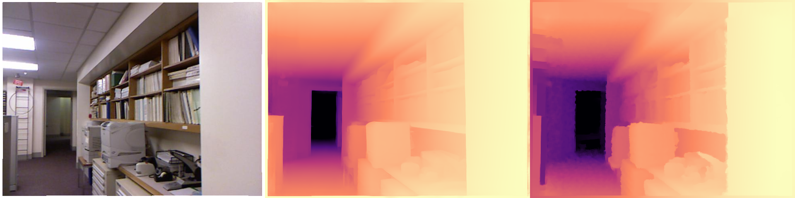
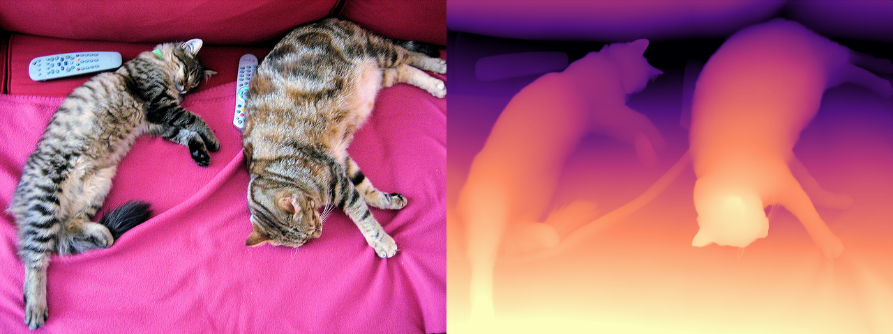
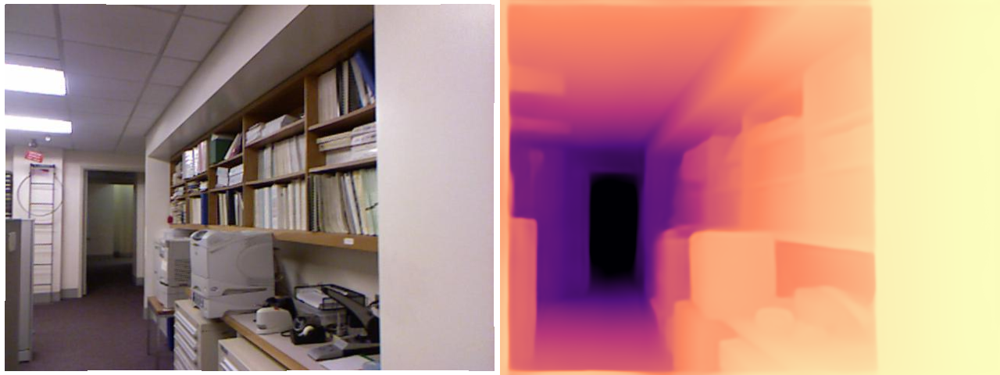

Everything to know about predicting depth from images: relative vs metric depth, the mid-2026 model landscape, the scale-and-shift alignment that every benchmark number hides, and runnable code to test the leading open models.
Author
Benedict Thekkel
1. What is Depth Estimation?
Depth estimation predicts, for every pixel of an image, how far that surface is from the camera. The learned flavour that dominates today is monocular depth estimation: one RGB image in, one depth map out - a problem that is geometrically ill-posed (a small nearby object and a large distant one project to identical pixels), so the model has to solve it with learned priors about how the world looks.
Input. A single RGB image, H x W x 3. Some models are resolution-sensitive: DPT-family models resize to a multiple of 14/32, Depth Pro always runs at 1536 x 1536, and prediction sharpness scales with input resolution.
Output. A single-channel map H x W, but what the numbers mean splits the whole field in two:
Output type
Values
Ambiguity
Example models
Relative (affine-invariant) depth
usually inverse depth / disparity, unitless: bigger = nearer
unknown scale and shift
Depth Anything V2, MiDaS/DPT, Marigold
Metric (absolute) depth
metres
none (in principle)
Depth Pro, ZoeDepth, UniDepth, DA V2-Metric
That distinction is the single most important thing on this page. A relative model tells you the chair is nearer than the wall; it cannot tell you the chair is 1.4 m away, and you cannot recover metres from it without an external reference (a known object size, a LiDAR ping, camera intrinsics + a ground-plane assumption). If your downstream system measures, grasps, or brakes, you need a metric model - or a metric sensor.
The non-learned alternatives are still the accuracy leaders when you can afford them, and production stacks fuse them with monocular depth rather than replacing them:
Stereo - two calibrated cameras; disparity gives metric depth from triangulation. Cheap, accurate near range, degrades on texture-less surfaces and at distance (error grows with depth squared).
Multi-view stereo / SfM (COLMAP) - many views, offline, very accurate, needs camera motion and static scenes.
Active sensors - structured light (Kinect v1, the sensor behind NYU Depth v2), time-of-flight (Kinect v2, phone dToF/“LiDAR” scanners), and rotating LiDAR (Velodyne, the sensor behind KITTI). Metric by construction, but sparse, power-hungry, short-range indoors (ToF), and blind on glass, mirrors, and dark or sunlit surfaces.
Neighbouring tasks:
Task
What it does
Typical tool
Stereo matching
Disparity from a calibrated image pair
RAFT-Stereo, FoundationStereo
Multi-view geometry / pose
Depth + camera pose from N views
VGGT, MapAnything, Depth Anything 3, COLMAP
Depth completion
Dense metric depth from RGB + sparse LiDAR
Prompt Depth Anything
Surface normals
Per-pixel orientation (the depth gradient)
Marigold-Normals, DSINE
Image to 3D
Mesh / Gaussians from one image
see 15_Image_to_3D
Segmentation
Which pixels belong to which object
see 03_Image_Segmentation
Object detection
Boxes, often lifted to 3D using depth
see 02_Object_Detection
2. Real-World Use Cases
Depth is rarely the product. It is a middle layer: something else consumes it - a compositor, a planner, a generative model - and that consumer decides whether you need metres or merely order.
Use case
Domain
Consumes / produces
Dominant constraint
Portrait bokeh, AR occlusion
Mobile consumer (iOS Portrait mode, ARKit/ARCore depth API)
Camera frame -> per-pixel depth for compositing virtual objects behind real ones
On-device latency and battery; temporal stability across frames; scale only matters relative to the subject
Metric accuracy that survives being fused across a walk-through
Endoscopy and surgical navigation
Healthcare
Endoscope video -> depth for 3D reconstruction
Extreme domain shift (specular, wet, non-Lambertian tissue), no ground truth to fine-tune on
Wildlife / crop measurement
Science and agriculture
Field photo -> object size in metres
Zero-shot metric accuracy with no calibration target in the shot
What the NYUv2 number hides. Nearly every headline AbsRel is reported after aligning the prediction to the ground truth - median scaling for metric models, a least-squares scale and shift for relative ones (section 4). An aligned score answers “did the model get the shape of the scene right”, not “can I trust these metres”, so a model can top the leaderboard and still be useless in a robot cell. Then there is everything the metric averages away: boundaries (AbsRel is dominated by big flat walls, while the pixels you actually care about are the halo of wrong depth around a chair leg or a strand of hair), ill-defined surfaces (glass, mirrors, water, the sky - the ground truth itself is a hole there, so no metric penalises a wrong answer), and temporal flicker (a per-frame model re-guesses the global scale on every frame; the depth map jitters even when the camera is still, which is why video-specific models exist). Finally, resolution is a deployment axis, not a detail: Depth Pro’s sharpness comes from running a 1536 x 1536 multi-scale pyramid, which is also why it costs ~10x a Depth Anything V2-Small forward pass.
3. How Modern Depth Estimation Works
The dated progression, each generation still alive somewhere:
Geometry (pre-2014). Stereo triangulation, SfM/MVS, shape-from-shading, plus active sensors. No learning, metric by construction, fails without texture or a second view.
Supervised CNN regression (2014-2019). Eigen et al. (2014) regress depth with a multi-scale CNN on NYUv2/KITTI; the scale-invariant log loss (SILog) appears here because absolute scale is unlearnable from a single dataset. Self-supervised variants (MonoDepth 2017, MonoDepth2 2019) train on stereo pairs or video with a photometric reprojection loss - no depth labels at all. All of them are in-domain: train on NYU, fail on the street.
Mixed-dataset zero-shot relative depth: MiDaS (2019-2021). Ranftl et al. train on a mix of incompatible depth sources (stereo movies, laser, ToF) using a scale-and-shift-invariant loss in disparity space. The model deliberately gives up metric scale in exchange for generalising to any image. DPT (2021) swaps the CNN for a ViT with a dense-prediction decoder; that DPT decoder is still the head on almost everything below.
Metric heads on relative backbones: ZoeDepth (2023). Pretrain relative (MiDaS-style), then bolt on an adaptive-bins metric head fine-tuned on NYU (indoor) and KITTI (outdoor). Metric, but only within the domains it was fine-tuned on.
Foundation-scale relative depth: Depth Anything V1/V2 (2024). DINOv2 encoder + DPT head, trained on ~600K synthetic labelled images with a large teacher pseudo-labelling ~62M unlabelled real images. V2’s key trick is that synthetic labels are pixel-perfect and never have sensor holes, so boundaries come out sharp; real data enters only as pseudo-labels for coverage. Still relative (inverse depth, affine-invariant).
Camera-aware and zero-shot metric depth (2024-2025). UniDepth and Metric3D v2 predict (or consume) camera intrinsics so metric scale becomes recoverable; Depth Pro (Apple, late 2024) predicts metric depth and the focal length in one shot, from a 1536 x 1536 multi-scale ViT pyramid fused by a DPT decoder - a 2.25 MP depth map in ~0.3 s on a server GPU, with the sharpest boundaries of the metric family. Marigold (2024) reframes depth as diffusion by fine-tuning Stable Diffusion 2 - beautiful detail, but many denoising steps (an LCM variant gets it to one).
Prompted and multi-view geometry (2025).Prompt Depth Anything takes a cheap LiDAR depth map as a prompt and outputs 4K metric depth. MoGe-2 predicts metric point maps; VGGT (CVPR 2025) and MapAnything (Meta, 2025) do feed-forward multi-view geometry - depth, pose and intrinsics from N views in a single pass.
The merge: Depth Anything 3 (Nov 2025). ByteDance shows a plain transformer (a vanilla DINO encoder, no task-specific architecture) with a single depth + ray prediction target handles any number of views: monocular depth, multi-view depth, and camera pose in one model. It beats DA V2 on monocular depth and VGGT on multi-view, and is the mid-2026 accuracy reference - but it ships in its own depth_anything_3 package, not in transformers.
Mid-2026 status. The task has effectively dissolved into “visual geometry foundation models” (depth + pose + intrinsics + point maps). For a single image on a 12 GB card and through transformers alone, the practical picks are unchanged: Depth Anything V2 for relative depth, Depth Pro or DA V2-Metric for metres.
Trade-off cheat sheet:
Approach
Output
Scale
Speed
Boundaries
Catch
Stereo / MVS (non-learned)
metric
absolute
fast (stereo) / slow (MVS)
good on texture
needs 2+ calibrated views
MiDaS / DPT
relative
unknown scale + shift
fast
soft
superseded by DA V2
Depth Anything V2
relative
unknown scale + shift
fastest (Small: 25M)
sharp
no metres
ZoeDepth
metric
absolute (in-domain)
medium
soft
degrades outside NYU/KITTI
DA V2-Metric
metric
absolute (indoor or outdoor variant)
fast
sharp
you must pick the right variant
Depth Pro
metric + focal length
absolute, zero-shot
slow (1536px pyramid)
sharpest
~950M params, restrictive licence
Marigold (diffusion)
relative
unknown scale + shift
slow (multi-step)
very sharp
SD-sized, diffusers not transformers
Depth Anything 3 / VGGT
metric-ish + pose
absolute (DA3-metric)
medium
sharp
vendor package, not transformers
4. Evaluation Metrics
Depth is scored per pixel against a sensor ground truth, on the valid pixels only (Kinect/LiDAR ground truth is full of holes, encoded as 0).
Absolute Relative error (AbsRel) - the headline metric. Relative, so a 10 cm error at 1 m counts as much as a 1 m error at 10 m:
Threshold accuracy (\(\delta_1, \delta_2, \delta_3\)) - the fraction of pixels whose ratio error is within \(1.25^k\). Outlier-robust, and the metric to quote when you care about “is it broadly right everywhere”:
\[\delta_k = \frac{1}{N}\left|\left\{ i : \max\left(\frac{d_i}{d_i^*}, \frac{d_i^*}{d_i}\right) < 1.25^k \right\}\right|\]
SILog (KITTI’s official metric) removes a global scale factor before scoring, and boundary-focused metrics (Depth Pro introduced a boundary F1 score) exist precisely because AbsRel is dominated by large flat regions and says nothing about the halo of wrong depth around a chair leg.
The pitfall: alignment comes first
A relative model does not output metres, so scoring its raw output against a metre-valued ground truth is meaningless. Depth Anything V2 outputs inverse depth (disparity-like, larger = nearer) with an unknown scale \(s\) and shift \(t\). The standard protocol - MiDaS’s, and everyone’s since - fits \((s, t)\) by least squares in disparity space against \(1/d^*\), on the valid pixels of each image, and only then inverts back to depth and scores:
\[\hat{disp} = s \cdot disp_{pred} + t \quad\text{fitted so that}\quad \hat{disp} \approx 1/d^*\]
Metric models get the weaker median scaling treatment in many papers (\(d \leftarrow d \cdot \mathrm{median}(d^*)/\mathrm{median}(d)\)), which quietly erases exactly the property you bought a metric model for. Always ask a leaderboard row which alignment it used; an aligned AbsRel and a raw AbsRel are not comparable numbers.
Other pitfalls: mask out invalid ground truth (gt > 0), cap the range (10 m on NYU, 80 m on KITTI), and apply the Eigen crop on NYU (the outer border has no reliable Kinect returns) or your numbers will not match anyone’s.
Speed is reported as ms/frame at a stated input resolution (depth cost scales with pixels, not with objects) and, for video, whether the model flickers frame to frame.
The cell below implements AbsRel / RMSE / \(\delta_1\) and the scale-and-shift fit on a toy scene - no model needed - and shows what happens if you skip the alignment.
import numpy as nprng = np.random.default_rng(0)# Toy ground truth: a 64x64 indoor-ish scene, 1 m (bottom) to 10 m (top), with a# near object in the middle. Metres.yy, xx = np.mgrid[0:64, 0:64]gt =10.0-9.0* (yy /63.0)gt[24:44, 20:44] =1.5# What a RELATIVE model actually returns: inverse depth (disparity) under an# unknown affine transform. s and t are properties of the model, not the scene -# they are not recoverable from the image, and they change from image to image.pred_disp =3.7* (1.0/ gt) +0.42+ rng.normal(0, 0.005, gt.shape)mask = (gt >1e-3) & (gt <10.0) & np.isfinite(gt)def depth_metrics(pred, gt, m):"AbsRel, RMSE (m) and delta1 over the valid pixels m. Both inputs in metres." p, g = pred[m], gt[m] absrel =float(np.mean(np.abs(p - g) / g)) rmse =float(np.sqrt(np.mean((p - g) **2))) ratio = np.maximum(p / g, g / p)return absrel, rmse, float(np.mean(ratio <1.25))def align_scale_shift(pred_disp, gt, m, eps=1e-6):"Least-squares fit s, t so that s * pred_disp + t ~ 1/gt. Returns depth in metres." m = m & np.isfinite(pred_disp) # a NaN/Inf prediction pixel cannot constrain the fitifint(m.sum()) <2: # model overflowed (e.g. fp16 bins) - nothing to fitreturn np.full(gt.shape, np.nan, dtype=np.float32), float("nan"), float("nan") A = np.stack([pred_disp[m], np.ones(int(m.sum()))], axis=1) s, t = np.linalg.lstsq(A, 1.0/ gt[m], rcond=None)[0]return1.0/ np.clip(s * pred_disp + t, eps, None), float(s), float(t)# Wrong: score the network output as if it were metres.print("raw disparity AbsRel %.3f RMSE %.3f m delta1 %.3f"% depth_metrics(pred_disp, gt, mask))# Right: fit (s, t) in disparity space, invert, then score.aligned, s, t = align_scale_shift(pred_disp, gt, mask)absrel, rmse, d1 = depth_metrics(aligned, gt, mask)print(f"scale+shift AbsRel {absrel:.3f} RMSE {rmse:.3f} m delta1 {d1:.3f}"f" (fit s={s:.2f} t={t:.2f} - i.e. it inverted the model's 3.7 / 0.42 transform)")# The half-measure: median scaling fixes the scale but never the shift. Even done# properly (in disparity space, then inverted back to metres) it stays badly wrong,# because the model's +0.42 offset is still in there.scaled = pred_disp * (np.median(1.0/ gt[mask]) / np.median(pred_disp[mask]))median_scaled =1.0/ np.clip(scaled, 1e-6, None)print("median-scaled AbsRel %.3f RMSE %.3f m delta1 %.3f"% depth_metrics(median_scaled, gt, mask))
raw disparity AbsRel 0.815 RMSE 4.989 m delta1 0.057
scale+shift AbsRel 0.005 RMSE 0.061 m delta1 1.000 (fit s=0.27 t=-0.11 - i.e. it inverted the model's 3.7 / 0.42 transform)
median-scaled AbsRel 0.193 RMSE 1.160 m delta1 0.555
5. Datasets
Depth ground truth comes from a sensor, so every dataset inherits that sensor’s failure modes: Kinect gives dense-but-noisy indoor depth with holes on glossy surfaces, LiDAR gives sparse accurate outdoor points with nothing above the horizon, and synthetic renders give perfect labels of a world that is not quite ours (which is exactly why Depth Anything V2 trains on them).
1K images + 2K human-annotated pairwise “which point is nearer” labels, 8 scenarios (transparent, aerial, underwater…)
1K images
Zero-shot, any domain
Apache 2.0
Relative-depth eval where no sensor GT exists
This notebook evaluates on NYU Depth v2, via the parquet re-upload jagennath-hari/nyuv2 (uint16 millimetre depth maps, 145-image test split). The canonical HF copy (sayakpaul/nyu_depth_v2) is a loading-script dataset, and datasets >= 4.0 dropped script support entirely - so it no longer loads. None of the datasets above are gated, but KITTI, ETH3D, Virtual KITTI and Middlebury are non-commercial or research-only; check before you train a product on them.
6. The Model Landscape (mid-2026)
There is no single official leaderboard for this task. The references are the Papers with Code tables for monocular depth on NYU-Depth v2 and KITTI Eigen split, plus DA-2K for relative depth in the wild and the Depth Anything 3 visual-geometry benchmark for the 2026 state of the art.
the mid-2026 SOTA - needs the depth_anything_3 package
UniDepth v2 / Metric3D v2
~300-700M
BSD / research
metric + intrinsics
camera-aware ViT
still the best raw NYUv2/KITTI metric numbers
VGGT / MapAnything / MoGe-2
0.3-1.3B
mixed
point maps + pose
feed-forward multi-view transformers
full geometry, not just depth
Who wins what.Accuracy: Depth Anything 3 (and UniDepth v2 on the classic NYUv2/KITTI metric tables) - neither is transformers-native. Metric accuracy through transformers: Depth Pro, at ~950M params and a 1536px pyramid. Speed and size: DA V2-Small at 24.8M params, which is also the only DA V2 checkpoint under a commercial licence and the one that ships as CoreML/ONNX for phones. Detail: Marigold and Depth Pro.
Tie this back to section 2: the ControlNet/creative use cases want DA V2-Small (relative is fine, sharpness and speed matter); the robot and the measuring app want Depth Pro or a prompted model (metres, or metres plus a ToF prior); the phone wants the quantised Small model; and the car wants none of them alone.
Fits a 12 GB card? Everything in the runnable sections below does (Depth Pro is the heaviest at ~2 GB of fp16 weights plus a chunky 1536px activation footprint). The rows that do not belong in a runnable cell here are DA3-GIANT (1.36B, vendor package) and the multi-view point-map models, which want more VRAM and their own runtimes.
7. Setup
Everything below runs on one modest GPU (an RTX 3060, 12 GB) or on CPU, and every runnable model loads through Hugging Face transformers - all four families expose AutoModelForDepthEstimation and the depth-estimation pipeline, so the loading code is nearly identical between them. Package roles:
accelerate - device placement for the larger checkpoints
datasets - the NYU Depth v2 eval split (RGB + uint16 mm depth), memory-mapped from parquet
numpy + pillow - depth maps are arrays; the colourmap below is 12 lines of numpy (no matplotlib)
pyecharts - the benchmark chart
pandas - the benchmark table
opencv-python - webcam capture in the optional real-time demo
Depth Anything 3, UniDepth, Metric3D and MoGe-2 need their own vendor packages and are not used in any runnable cell here. Marigold runs through diffusers (same HF ecosystem) - see section 14.
All downloads (sample image, HF model + dataset cache) land in DL_tasks/datasets/, which is gitignored.
# Every runnable model here is transformers-native - no vendor depth packages.# %pip install -q torch transformers datasets accelerate pillow pyecharts pandas# Optional extra for the webcam demo (section 13)# %pip install -q opencv-python
import ctypesimport ctypes.utilimport gcimport timefrom pathlib import Pathimport torchfrom dotenv import find_dotenv, load_dotenv# Knowledge/.env sets HF_TOKEN - authenticated HF Hub requests get higher rate limitsload_dotenv(find_dotenv(usecwd=True))device ="cuda:0"if torch.cuda.is_available() else"cpu"dtype = torch.float16 if device !="cpu"else torch.float32if device !="cpu":print(torch.cuda.get_device_name(0))print("device:", device)def vram(tag=""):"Report current GPU memory (allocated / reserved). No-op on CPU."if torch.cuda.is_available(): alloc = torch.cuda.memory_allocated() /1e9 reserved = torch.cuda.memory_reserved() /1e9print(f"VRAM {tag:20s}{alloc:5.2f} GB allocated / {reserved:5.2f} GB reserved")def free_memory():"Collect garbage, empty the CUDA cache, and return freed CPU RAM to the OS." gc.collect()if torch.cuda.is_available(): torch.cuda.empty_cache() torch.cuda.ipc_collect()# glibc keeps freed CPU allocations in its arenas instead of returning them# to the OS, so RSS compounds across model sections (cpu-offloaded weights# live in system RAM). malloc_trim(0) hands the freed arenas back. See# dl-visualization-and-memory.instructions.md - not optional on a 12 GB box.try: ctypes.CDLL(ctypes.util.find_library("c") or"libc.so.6").malloc_trim(0)exceptException:pass# All downloads go to DL_tasks/datasets/ (gitignored)DATA_DIR = Path("../../datasets")DATA_DIR.mkdir(exist_ok=True)HF_CACHE =str(DATA_DIR /"hf_cache")
NVIDIA GeForce RTX 3060
device: cuda:0
import urllib.requestimport numpy as npfrom datasets import load_datasetfrom PIL import Image# A stable sample image (COCO val2017: two cats on a couch, with a clear# near/far layout - remote controls up front, wall at the back).SAMPLE = DATA_DIR /"coco_cats.jpg"ifnot SAMPLE.exists(): urllib.request.urlretrieve("http://images.cocodataset.org/val2017/000000039769.jpg", SAMPLE)image = Image.open(SAMPLE).convert("RGB")# Eval set: NYU Depth v2 test split (145 indoor RGB-D pairs, Kinect depth in mm).# The canonical sayakpaul/nyu_depth_v2 copy is a loading-script dataset and no# longer works on datasets >= 4.0, so we use the parquet re-upload.nyu = load_dataset("jagennath-hari/nyuv2", split="test", cache_dir=HF_CACHE)MAX_DEPTH =10.0# NYU evaluation cap, metresdef nyu_pair(row):"Return (RGB PIL image, ground-truth depth in metres as float32 HxW)." rgb = row["rgb"].convert("RGB") depth_m = np.asarray(row["depth"], dtype=np.float32) /1000.0# uint16 mm -> mreturn rgb, depth_m# --- display helpers (ECharts cannot draw images; PIL can) --------------------# A magma-like colourmap in pure numpy: bright = near, dark = far._STOPS = np.array([ [0.00, 0, 0, 4], [0.25, 81, 18, 124], [0.50, 183, 55, 121], [0.75, 251, 136, 97], [1.00, 252, 253, 191],], dtype=np.float32)def colorize(depth, near_is_bright=True):"HxW float array (depth in m, or disparity) -> RGB PIL image, 2-98 pct stretched." d = np.asarray(depth, dtype=np.float32) finite = np.isfinite(d) & (d >0) lo, hi = np.percentile(d[finite], [2, 98]) x = np.clip((d - lo) /max(float(hi - lo), 1e-6), 0.0, 1.0)ifnot near_is_bright: # metric depth: large value = far, so flip it x =1.0- x rgb = np.stack([np.interp(x, _STOPS[:, 0], _STOPS[:, i +1]) for i in (0, 1, 2)], axis=-1)return Image.fromarray(rgb.astype("uint8"))def side_by_side(*imgs):"Paste PIL images left-to-right at a common height." h =min(im.height for im in imgs) imgs = [im.convert("RGB").resize((int(im.width * h / im.height), h)) for im in imgs] canvas = Image.new("RGB", (sum(im.width for im in imgs), h)) x =0for im in imgs: canvas.paste(im, (x, 0)) x += im.widthreturn canvasrgb0, gt0 = nyu_pair(nyu[0])print(f"sample image: {image.size} eval set: {len(nyu)} NYU frames, gt {gt0.shape}")print(f"gt depth range: {gt0[gt0 >0].min():.2f} - {gt0.max():.2f} m, "f"{(gt0 <=0).mean():.1%} invalid (Kinect holes)")side_by_side(rgb0, colorize(gt0, near_is_bright=False))
8. Depth Anything V2 (relative depth, the default)
depth-anything/Depth-Anything-V2-Small-hf - 24.8M params, Apache 2.0, DINOv2-S encoder with a DPT head. This is the model to reach for first: it runs in a few milliseconds, generalises to essentially any image, and is the one checkpoint of the family you can ship commercially (Base and Large are CC-BY-NC 4.0).
The depth-estimation pipeline returns a dict with predicted_depth (a tensor at the input resolution) and depth (a PIL preview). Read the tensor, not the preview: for the relative checkpoints the values are inverse depth - bigger means nearer - on an arbitrary affine scale that differs from image to image. Never feed those numbers to anything that expects metres (see section 4).
depth-anything/Depth-Anything-V2-Metric-Indoor-Base-hf - the same DA V2 backbone with a metric head fine-tuned on Hypersim (synthetic indoor renders), capped at 20 m. An Outdoor sibling is fine-tuned on Virtual KITTI 2 and capped at 80 m.
This is the cheap way to get metres: pick the variant that matches your domain and the output is already in the right units. The cost is that you have to know the domain - run the indoor model on a street and the numbers are confidently wrong. Note the licence: Small is Apache 2.0, Base/Large inherit DA V2’s CC-BY-NC 4.0.
Here we load it by hand (AutoImageProcessor + AutoModelForDepthEstimation) rather than through the pipeline, because that is the API you need whenever you want batching, post_process_depth_estimation control, or the extra outputs of section 10.
from transformers import AutoImageProcessor, AutoModelForDepthEstimationmetric_id ="depth-anything/Depth-Anything-V2-Metric-Indoor-Base-hf"metric_proc = AutoImageProcessor.from_pretrained(metric_id, cache_dir=HF_CACHE)metric_model = AutoModelForDepthEstimation.from_pretrained( metric_id, dtype=dtype, cache_dir=HF_CACHE).to(device).eval()rgb, gt = nyu_pair(nyu[0]) # an indoor NYU frame, so the indoor model is the right oneinputs = metric_proc(images=rgb, return_tensors="pt").to(metric_model.device, metric_model.dtype)t0 = time.perf_counter()with torch.inference_mode(): outputs = metric_model(**inputs)post = metric_proc.post_process_depth_estimation(outputs, target_sizes=[(rgb.height, rgb.width)])pred_m = post[0]["predicted_depth"].float().cpu().numpy()print(f"{(time.perf_counter() - t0) *1000:.0f} ms")m = (gt >1e-3) & (gt < MAX_DEPTH)print(f"predicted {pred_m[m].min():.2f} .. {pred_m[m].max():.2f} m "f"(median {np.median(pred_m[m]):.2f} m) ground truth median {np.median(gt[m]):.2f} m")print("raw AbsRel %.3f RMSE %.3f m delta1 %.3f"% depth_metrics(pred_m, gt, m)) # no alignment - real metresdel metric_model, metric_proc, outputs, inputsfree_memory()vram("after DA V2-Metric")side_by_side(rgb, colorize(pred_m, near_is_bright=False), colorize(gt, near_is_bright=False))
53 ms
predicted 0.54 .. 14.74 m (median 3.15 m) ground truth median 2.35 m
raw AbsRel 0.433 RMSE 1.482 m delta1 0.055
VRAM after DA V2-Metric 0.06 GB allocated / 0.08 GB reserved

10. Depth Pro (zero-shot metric depth + focal length)
apple/DepthPro-hf - 952M params. Depth Pro predicts metric depth without being told the camera intrinsics, because it also predicts the horizontal field of view (and therefore the focal length) with a dedicated head. That is the piece that makes zero-shot metric depth possible on an arbitrary internet photo: metres and focal length are entangled, so a model that guesses one can commit to the other.
It runs a multi-scale patch pyramid at 1536 x 1536 regardless of your input size, which is where its boundary sharpness - and its cost, roughly 10x a DA V2-Small forward - comes from. In fp16 the weights are ~1.9 GB; with the 1536px activations, budget ~4-5 GB of VRAM. Pass use_fov_model=False to skip the FOV encoder and save memory when you only want the depth map.
Licence warning:apple-amlr is Apple’s research licence, not an open-source one. Fine for experiments, read it before you ship.
951 ms
field of view: 47.2 deg focal length: 731 px
metric depth: 0.72 .. 1.19 m
VRAM Depth Pro loaded 1.99 GB allocated / 6.10 GB reserved
VRAM after Depth Pro 0.06 GB allocated / 0.08 GB reserved

11. ZoeDepth (the permissively licensed metric baseline)
Intel/zoedepth-nyu-kitti - 345M params, MIT. The 2023 design that first made “relative pretraining + metric fine-tuning” work: a MiDaS/BEiT encoder, then an adaptive-bins metric head trained jointly on NYU (indoor) and KITTI (outdoor) with a router that picks the right head per image.
It is beaten on accuracy by both DA V2-Metric and Depth Pro, and it is soft on boundaries - but it is MIT-licensed, one checkpoint covers indoor and outdoor, and it is a good sanity baseline. Its image processor pads dynamically and does the flip-averaging trick from the paper, so its post_process_depth_estimation takes source_sizes (the input size to undo the padding), not target_sizes - a genuine API wart worth knowing.
zoe_id ="Intel/zoedepth-nyu-kitti"zoe_proc = AutoImageProcessor.from_pretrained(zoe_id, cache_dir=HF_CACHE)zoe_model = AutoModelForDepthEstimation.from_pretrained( zoe_id, dtype=dtype, cache_dir=HF_CACHE).to(device).eval()inputs = zoe_proc(images=rgb, return_tensors="pt").to(zoe_model.device, zoe_model.dtype)t0 = time.perf_counter()with torch.inference_mode(): outputs = zoe_model(**inputs)# The paper averages the prediction with its horizontal flip; the processor# will do that for us if we hand it the flipped forward pass as well. outputs_flipped = zoe_model(pixel_values=torch.flip(inputs["pixel_values"], dims=[3]))post = zoe_proc.post_process_depth_estimation( outputs, source_sizes=[(rgb.height, rgb.width)], # NOT target_sizes - ZoeDepth pads dynamically outputs_flipped=outputs_flipped,)zoe_depth = post[0]["predicted_depth"].float().cpu().numpy()print(f"{(time.perf_counter() - t0) *1000:.0f} ms "f"metric depth {zoe_depth.min():.2f} .. {zoe_depth.max():.2f} m")print("raw AbsRel %.3f RMSE %.3f m delta1 %.3f"% depth_metrics(zoe_depth, gt, m))del zoe_model, zoe_proc, outputs, outputs_flipped, inputs, postfree_memory()vram("after ZoeDepth")side_by_side(rgb, colorize(zoe_depth, near_is_bright=False))
460 ms metric depth 0.98 .. 10.25 m
raw AbsRel 0.176 RMSE 0.780 m delta1 0.721
VRAM after ZoeDepth 0.06 GB allocated / 0.08 GB reserved

12. Head-to-head Benchmark
Same images, same crop, same metrics, one model live at a time. The eval set is the first N frames of the NYU Depth v2 test split (indoor, Kinect ground truth, capped at 10 m, standard Eigen crop), on an RTX 3060 (12 GB).
Two AbsRel columns, and the gap between them is the whole point of section 4:
aligned - a least-squares scale and shift fit in disparity space, per image. This is the only way to score a relative model, and it is what most published numbers use. Every model gets it, so the column is comparable.
raw - the prediction taken literally as metres. Only defined for the metric models, and it is the number that tells you whether you can actually use the output. Expect it to be substantially worse than the aligned one; that difference is the metric error alignment hides.
Caveats: N frames of one indoor dataset is a smoke test, not a leaderboard. NYU is exactly the domain DA V2-Metric-Indoor and ZoeDepth were fine-tuned on, and it is out-of-domain for Depth Pro’s zero-shot metric claim - so read the raw column as “how well does an in-domain fine-tune beat a generalist here”, not “which model is best”.
N =12# eval frames (max 145). Depth Pro dominates the runtime: ~10x the others.# Standard NYU Eigen crop: the outer border has no reliable Kinect returns.def eigen_crop(a):return a[45:471, 41:601]def valid_mask(gt):return (gt >1e-3) & (gt < MAX_DEPTH) & np.isfinite(gt)def score(pred, gt, kind, eps=1e-6):"Score one frame. kind: 'relative' (inverse depth) or 'metric' (metres)." pred, gt = eigen_crop(pred), eigen_crop(gt) m = valid_mask(gt) & np.isfinite(pred) # drop pixels a model returned as NaN/Inf# Everything is aligned in DISPARITY space, so metric predictions are inverted first. disp = pred if kind =="relative"else1.0/ np.clip(pred, eps, None) aligned, _, _ = align_scale_shift(disp, gt, m) ma = m & np.isfinite(aligned) nan3 = (float("nan"), float("nan"), float("nan")) a_absrel, a_rmse, a_d1 = depth_metrics(aligned, gt, ma) ifint(ma.sum()) else nan3if kind =="metric": r_absrel, r_rmse, r_d1 = depth_metrics(np.clip(pred, 1e-3, None), gt, m) ifint(m.sum()) else nan3else: r_absrel = r_rmse = r_d1 =float("nan")returndict(absrel_aligned=a_absrel, rmse_aligned=a_rmse, delta1_aligned=a_d1, absrel_raw=r_absrel, rmse_raw=r_rmse, delta1_raw=r_d1)def to_hw(t, gt):"Model output -> float32 HxW array matching the ground-truth grid." a = t.float().cpu().numpy() a = a[0] if a.ndim ==3else aif a.shape != gt.shape: # bilinear resize in float ('F' mode) - no matplotlib needed a = np.asarray(Image.fromarray(a).resize((gt.shape[1], gt.shape[0]), Image.BILINEAR))return adef benchmark(name, ckpt, kind, run_dtype=dtype, n=N):"Load ckpt, run it over n NYU frames, free it, and return the mean metrics." pipe = pipeline("depth-estimation", model=ckpt, device=device, dtype=run_dtype, model_kwargs={"cache_dir": HF_CACHE}) rows, elapsed = [], 0.0for i inrange(n): rgb_i, gt_i = nyu_pair(nyu[i]) t0 = time.perf_counter()with torch.inference_mode(): out = pipe(rgb_i) elapsed += time.perf_counter() - t0 rows.append(score(to_hw(out["predicted_depth"], gt_i), gt_i, kind))del pipe free_memory() res = {k: float(np.nanmean([r[k] for r in rows])) for k in rows[0]} res.update(model=name, kind=kind, ms_per_image=1000.0* elapsed / n)print(f"{name:26s} AbsRel(aligned) {res['absrel_aligned']:.3f} "f"delta1 {res['delta1_aligned']:.3f} "f"AbsRel(raw) {res['absrel_raw']:.3f}{res['ms_per_image']:6.0f} ms/img")return res
# (name, checkpoint, kind, run_dtype). ZoeDepth's metric bin head is numerically# unstable in fp16 (softmax over depth bins overflows to NaN on some frames), so it# runs in fp32 - it is only 345M params and fits easily. Depth Pro stays fp16: it is# stable but memory-heavy (~6 GB reserved), and fp32 would risk an OOM on 12 GB.MODELS = [ ("DAv2-Small", "depth-anything/Depth-Anything-V2-Small-hf", "relative", dtype), ("DAv2-Base", "depth-anything/Depth-Anything-V2-Base-hf", "relative", dtype), ("DPT-Large (MiDaS)", "Intel/dpt-large", "relative", dtype), ("DAv2-Metric-Indoor","depth-anything/Depth-Anything-V2-Metric-Indoor-Base-hf", "metric", dtype), ("ZoeDepth-nyu-kitti","Intel/zoedepth-nyu-kitti", "metric", torch.float32), ("Depth Pro", "apple/DepthPro-hf", "metric", dtype),]results = [benchmark(*spec) for spec in MODELS] # loads and frees one model at a timevram("after benchmark")
[transformers] You seem to be using the pipelines sequentially on GPU. In order to maximize efficiency please use a dataset
/tmp/ipykernel_3000/347675089.py:49: RuntimeWarning: Mean of empty slice
res = {k: float(np.nanmean([r[k] for r in rows])) for k in rows[0]}
DAv2-Small AbsRel(aligned) 0.057 delta1 0.973 AbsRel(raw) nan 32 ms/img
DAv2-Base AbsRel(aligned) 0.053 delta1 0.969 AbsRel(raw) nan 48 ms/img
[transformers] DPTForDepthEstimation LOAD REPORT from: Intel/dpt-large
Key | Status |
---------------------------------------------------------------+---------+-
neck.fusion_stage.layers.0.residual_layer1.convolution2.bias | MISSING |
neck.fusion_stage.layers.0.residual_layer1.convolution1.weight | MISSING |
neck.fusion_stage.layers.0.residual_layer1.convolution1.bias | MISSING |
neck.fusion_stage.layers.0.residual_layer1.convolution2.weight | MISSING |
Notes:
- MISSING: those params were newly initialized because missing from the checkpoint. Consider training on your downstream task.
DPT-Large (MiDaS) AbsRel(aligned) 0.112 delta1 0.888 AbsRel(raw) nan 47 ms/img
from pyecharts import options as optsfrom pyecharts.charts import Barnames = [r["model"] for r in results]bar = ( Bar() .add_xaxis(names) .add_yaxis("AbsRel (scale+shift aligned)", [round(r["absrel_aligned"], 3) for r in results]) .add_yaxis("AbsRel (raw metres)", [round(r["absrel_raw"], 3) if r["kind"] =="metric"elseNonefor r in results]) .set_global_opts( title_opts=opts.TitleOpts(title="NYU Depth v2 (Eigen crop)", subtitle=f"{N} frames, RTX 3060 - lower is better"), xaxis_opts=opts.AxisOpts(name="model", axislabel_opts=opts.LabelOpts(rotate=25)), yaxis_opts=opts.AxisOpts(name="AbsRel"), tooltip_opts=opts.TooltipOpts(trigger="axis"), ))bar.render_notebook()
from pyecharts.charts import Scatter# Accuracy vs speed: the engineering decision. Bottom-left is the sweet spot# (low error, low latency). One series per model so the legend names the points.xs = [f"{r['ms_per_image']:.0f}"for r in results]scatter = Scatter().add_xaxis(xs)for i, r inenumerate(results): ys = [None] *len(results) ys[i] =round(r["absrel_aligned"], 3) scatter.add_yaxis(r["model"], ys, symbol_size=16, label_opts=opts.LabelOpts(is_show=False))scatter.set_global_opts( title_opts=opts.TitleOpts(title="Accuracy vs speed", subtitle="NYU Depth v2, RTX 3060"), xaxis_opts=opts.AxisOpts(name="ms / image"), yaxis_opts=opts.AxisOpts(name="AbsRel (aligned)", type_="value"), tooltip_opts=opts.TooltipOpts(trigger="item"),)scatter.render_notebook()
13. Real-time Webcam Demo
Depth Anything V2-Small is small enough to run live (tens of ms per frame on a 3060, and it is the checkpoint Apple ships as CoreML for iPhones). This streams the camera through the pipeline and shows the raw frame next to its depth map as it happens.
Watch the status line, not just the picture: the depth map is sharp but flickery, and the 2-98 percentile disparity range printed each frame is that flicker made numeric. A per-frame relative model re-fits its own scale on every frame, so the range breathes even when nothing in the room moves. That is exactly what video-specific models (Video Depth Anything, DepthCrafter) exist to fix.
The view is live: the left pane is the raw camera, the right pane is the same frame after the model, and both update in place through a display handle - no cv2.imshow, no GUI, so it works over JupyterLab against a headless container. A status line underneath carries the running FPS and the per-frame numbers. It runs for STREAM_SECONDS seconds; interrupt the kernel to stop it early.
Two things throttle the frame rate before the model does, both measured on this machine: auto-exposure drops the sensor to 15 FPS in a dim room (take exposure off auto to pin 30), and setting CAP_PROP_BUFFERSIZEhalves the delivered rate on the V4L2 backend, so the helper deliberately does not set it.
Needs a real camera at /dev/video0 - the cell raises rather than substituting stand-in images. The docs builder never runs it (skip_exec: true).
# opencv-python-headless is a project dependency; the headless build captures from# V4L2 fine, it only drops the GUI windows.import ioimport timeimport cv2import numpy as npimport torchfrom IPython.display import Image as IPyImagefrom IPython.display import Pretty, displayfrom PIL import Image, ImageDraw, ImageFontCAM =0# /dev/video0WARMUP =10# throwaway reads - auto-exposure and white balance need to settleSTREAM_SECONDS =15# how long a live demo runs; interrupt the kernel to stop earlydef bootstrap(*names, notebook, sections):"""Make this demo runnable on a cold kernel, without duplicating the notebook. The demo builds on the notebook's setup and helper cells. Instead of making you run them by hand - or copying them in here and letting the copies drift - this reads the notebook file and executes those sections itself, and only when a name is actually missing. Run the notebook top to bottom and it does nothing at all. It stops as soon as every required name exists, so trailing benchmark cells in a section are not run. """ifall(n inglobals() for n in names):returnimport jsonfrom pathlib import Pathfrom IPython.utils.capture import capture_output path = Path(notebook)ifnot path.exists():raiseNameError(f"this demo needs {', '.join(n for n in names if n notinglobals())}, and cannot "f"find {notebook} to bootstrap from (cwd is {Path.cwd()}, expected the notebook's "f"own directory). Run section(s) {'; '.join(sections)} by hand instead." )print(f"cold start: running {'; '.join(sections)} from {notebook} (output suppressed)") heading =Nonefor cell in json.loads(path.read_text())["cells"]: src ="".join(cell["source"])if cell["cell_type"] =="markdown"and src.lstrip().startswith("## "): heading = src.lstrip().splitlines()[0][3:].strip()continueif cell["cell_type"] !="code"ornot heading or"def bootstrap("in src:continueifnotany(heading.startswith(s) for s in sections):continue code ="".join(""if l.lstrip().startswith(("%", "!")) else lfor l in src.splitlines(keepends=True))# The setup cells print tables and display sample images. This demo only# wants the live stream, so swallow their output - errors still propagate.with capture_output():exec(compile(code, f"{notebook} [{heading}]", "exec"), globals())ifall(n inglobals() for n in names):break still = [n for n in names if n notinglobals()]if still:raiseNameError(f"bootstrapped {'; '.join(sections)} but {', '.join(still)} ""are still undefined - the notebook layout may have changed.")def open_camera(index=CAM, width=640, height=480, auto_exposure=True, exposure=150):"Open a V4L2 webcam in MJPEG mode, let it settle, and return the capture handle." cap = cv2.VideoCapture(index, cv2.CAP_V4L2)ifnot cap.isOpened():raiseRuntimeError(f"/dev/video{index} did not open - no camera attached, ""or it is not passed through into this container" ) cap.set(cv2.CAP_PROP_FOURCC, cv2.VideoWriter.fourcc(*"MJPG")) # MJPEG unlocks the higher modes cap.set(cv2.CAP_PROP_FRAME_WIDTH, width) cap.set(cv2.CAP_PROP_FRAME_HEIGHT, height)# UVC exposure is DEVICE state and persists between processes: if anything left# this camera in manual mode, every frame comes back dark and never adapts# (measured here: mean 13/255 stuck, vs 109/255 on auto). So ask for the mode# explicitly instead of inheriting whatever the last program set.# auto (3): correct brightness, but a dim room throttles the sensor to 15 FPS# manual (1): locked 30 FPS, at whatever `exposure` level suits your lighting cap.set(cv2.CAP_PROP_AUTO_EXPOSURE, 3if auto_exposure else1)ifnot auto_exposure: cap.set(cv2.CAP_PROP_EXPOSURE, exposure)# Deliberately no CAP_PROP_BUFFERSIZE: on the V4L2 backend it HALVES the# delivered frame rate (measured here: 67 -> 134 ms per read) and does not make# frames any fresher.for _ inrange(WARMUP):ifnot cap.read()[0]: cap.release()raiseRuntimeError(f"/dev/video{index} opened but delivered no frames")return capdef grab(cap):"Read one frame off an open camera as an RGB PIL image (OpenCV hands back BGR)." ok, frame = cap.read()ifnot ok:raiseRuntimeError("failed to read a frame")return Image.fromarray(cv2.cvtColor(frame, cv2.COLOR_BGR2RGB))def capture_frame(**kw):"Open the camera, grab one settled frame, and release the device." cap = open_camera(**kw)try:return grab(cap)finally: cap.release()_FONT = ImageFont.load_default(size=15)def draw_lines(img, lines, pad=6):"Burn a few lines of text into a band across the top of a copy of `img`." out = img.convert("RGB").copy() d = ImageDraw.Draw(out) d.rectangle([0, 0, out.width, 18*len(lines) +2* pad], fill=(0, 0, 0))for i, line inenumerate(lines): d.text((pad, pad +18* i), line, fill=(255, 255, 255), font=_FONT)return outdef pair_view(left, right, gap=8):"Raw frame and annotated frame side by side on one canvas - the live view." right = right.convert("RGB")if right.size != left.size: right = right.resize(left.size) canvas = Image.new("RGB", (left.width *2+ gap, left.height), (20, 20, 20)) canvas.paste(left.convert("RGB"), (0, 0)) canvas.paste(right, (left.width + gap, 0))return canvasdef _jpeg(img, quality=80):"Encode a PIL image to JPEG bytes - what actually goes over the wire each frame." buf = io.BytesIO() img.convert("RGB").save(buf, format="JPEG", quality=quality)return buf.getvalue()def live_stream(annotate, seconds=STREAM_SECONDS, width=640, height=480):"""Stream `raw | annotated` into the notebook output until `seconds` elapse. `annotate(rgb)` returns `(annotated_image, info_string)`. The image and the status line each own a display handle and update in place, so this needs no GUI and no `cv2.imshow` - it works over JupyterLab against a headless container. Interrupt the kernel (the stop button) to end early; the camera is still released. """ cap = open_camera(width=width, height=height) view = status =None# created from the FIRST real frame, so no placeholder flashes up n, t0 =0, time.perf_counter()try:while time.perf_counter() - t0 < seconds: rgb = grab(cap) annotated, info = annotate(rgb) n +=1 frame = IPyImage(data=_jpeg(pair_view(rgb, annotated))) line = Pretty(f"frame {n:4d}{n / (time.perf_counter() - t0):5.1f} FPS {info}")if view isNone: view = display(frame, display_id=True) status = display(line, display_id=True)else: view.update(frame) status.update(line)exceptKeyboardInterrupt:if status isnotNone: status.update(Pretty(f"stopped at frame {n}"))finally: cap.release() # always hand the device back elapsed = time.perf_counter() - t0print(f"{n} frames in {elapsed:.1f}s -> {n /max(elapsed, 1e-9):.1f} FPS end-to-end ""(camera + model + JPEG encode)")def preview(seconds=5, width=640, height=480):"Stream the raw camera so you can frame the shot, then return the final frame." cap = open_camera(width=width, height=height) view = status =None# created from the FIRST real frame, so no placeholder flashes up last, n, t0 =None, 0, time.perf_counter()try:while time.perf_counter() - t0 < seconds: last = grab(cap) n +=1 frame = IPyImage(data=_jpeg(last)) line = Pretty(f"framing - {seconds - (time.perf_counter() - t0):4.1f}s left, "f"{n} frames (the last one is the one that gets used)")if view isNone: view = display(frame, display_id=True) status = display(line, display_id=True)else: view.update(frame) status.update(line)exceptKeyboardInterrupt:passfinally: cap.release()if status isnotNone: status.update(Pretty(f"captured the last of {n} frames"))return last# Everything below builds on the notebook's setup and helper cells.bootstrap("device", "dtype", "HF_CACHE", "colorize", "free_memory", "vram", notebook="00_Depth_Estimation.ipynb", sections=["7. Setup"])# Section 8 leaves da_pipe live, but this cell frees it on its last line. Reload it# when it is gone so the cell can be re-run on its own (weights are cached on disk).if"da_pipe"notinglobals():from transformers import pipeline da_pipe = pipeline("depth-estimation", model="depth-anything/Depth-Anything-V2-Small-hf", device=device, dtype=dtype, model_kwargs={"cache_dir": HF_CACHE}, ) vram("DA V2-Small reloaded")def annotate(rgb):"One frame -> (depth map image, the scale numbers that keep drifting)." t0 = time.perf_counter()with torch.inference_mode(): out = da_pipe(rgb) depth = out["predicted_depth"].float().cpu().numpy() dt = (time.perf_counter() - t0) *1000 lo, hi = np.percentile(depth[np.isfinite(depth)], [2, 98])return colorize(depth), f"model {dt:4.0f} ms disparity 2-98 pct {lo:7.2f} .. {hi:7.2f}"live_stream(annotate)# End of notebook - release the DA V2 pipeline we kept live since section 8.del da_pipefree_memory()vram("final")
frame 167 11.1 FPS model 38 ms disparity 2-98 pct 0.00 .. 5.30
167 frames in 15.0s -> 11.1 FPS end-to-end (camera + model + JPEG encode)
VRAM final 0.01 GB allocated / 0.02 GB reserved
14. Common Frameworks
Depth is a dense-prediction task with an unusual ecosystem shape: the models are simple encoders with a head, so the modelling layer is thin and transformers covers most of it - but the consumers of depth are everywhere, and each one wants a different format. A point cloud for robotics, a control image for a diffusion model, a CoreML bundle for a phone. Most of the frameworks below exist to convert, not to predict.
AbsRel, RMSE, delta-1, and the scale/shift alignment that has to happen before a relative model can be scored at all
Apache 2.0
Comparing models. Section 12 shows why: without alignment the comparison measures your normalisation, not the model
The 2026 default stack is transformers + Depth Anything V2 to predict, OpenCV for the intrinsics that turn it into metres, Open3D if the output is geometry, and ONNX Runtime or CoreML if it leaves the server. Marigold when edges matter, a vendor repo when the last few points do.
The common wrong turn is treating relative depth as if it were metric. Every downstream consumer - obstacle distance, measurement, 3-D reconstruction - needs a scale, and a relative model gives you an ordering instead. Either use a metric checkpoint with a known focal length, or fuse a real sensor reading. The second wrong turn is running a per-frame model on video: the scale breathes between frames, and no amount of smoothing fixes it.
15. Going Further
Fine-tuning. The HF depth estimation fine-tuning guide covers the AutoModelForDepthEstimation + labels path. To make a relative model metric on your rig, do what DA V2-Metric did: keep the DINOv2 encoder frozen, swap in a metric head, fine-tune on a few thousand RGB-D frames from your own sensor. It is usually cheaper and far more accurate than fighting a generalist for absolute scale.
Sparse depth as a prompt. If you have any real depth signal (phone ToF, a cheap 8x8 ToF chip, a few LiDAR returns), Prompt Depth Anything fuses it into the decoder and returns 4K metric depth. This is transformers-native and beats every purely monocular model at metric accuracy - a reminder that the best fix for scale ambiguity is a sensor, not a bigger network.
Diffusion depth (diffusers).Marigold (MarigoldDepthPipeline) is the sharpest relative model, and the LCM variant runs in one step. Same HF ecosystem, different library.
Video / temporal consistency.Video Depth Anything and DepthCrafter add temporal attention so the scale stops breathing between frames. Per-frame models flicker; do not ship one into a video product without checking.
Downstream. Depth feeds ControlNet-depth conditioning (see 04_Text_to_Image), single-image 3D (see 15_Image_to_3D), and 3D object detection (see 02_Object_Detection); 03_Image_Segmentation is the usual partner when you need “which object and how far”.